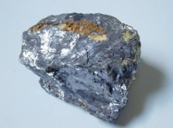

|
Polônio |

Utilizações:
-Como fonte de nêutrons (principalmente em liga com o bismuto)
-Fonte termoelétrica em sondas de espaço profundo ou satélites
-Em equipamentos anti-estática (uma desta aplicação é remover estática em fábricas de tecidos e materiais plásticos
-Em medidores de espessura de materiais
-Velas de ignição com polônio foram promovidas pela empresa Firestone de 1940 a 1953 (seus benefícios eram limitados)
O polônio é um elemento natural.
 -Radioativo
-Radioativo